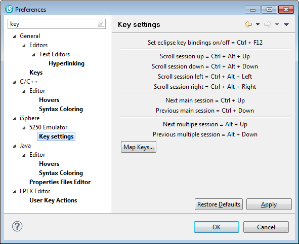

The Key settings page is nothing more than a reminder for the global key mappings of the 5250 emulator.

This page specifies the minimal session size of a 5250 session.
If the size of the session window falls below the specified minimal size, scrollbars appear and you can use the mouse or the keyboard to scroll the window:
| Ctrl-Alt-Up | - | Scroll up |
| Ctrl-Alt-Down | - | Scroll down |
| Ctrl-Alt-Left | - | Scroll left |
| Ctrl-Alt-Right | - | Scroll right |
This page specifies the session defaults that are used, when creating a new 5250 session configuration.

| Port | - | Telnet port number of your host. |
| Codepage | - | Codepage of your 5250 session. |
| Screen size | - | Screen size of your 5250 session. |
| Area | - | Specifies where to create the 5250 window. The editor area is in the center of the Eclipse window whereas views are arrange around the editor area. |
| View | - | Specifies the rules for sessions that are created in a view. |
| Enable multi sessions | - | Specifies whether or not you can open up to 4 sessions in a session tab. (For an example, refer to section Session) |
| Restore pinned views on startup | - | Specifies whether or not to restore all pinned 5250 session views on startup. When this option is checked, all pinned 5250 session views are activated when the IDE starts. The focus is set on the last activated view. |
| Group sessions by | - | Specifies how to group sessions. You can disable session grouping, which is the default, or you can group sessions by Connection or Session. When sessions are grouped by connections, a separate view is created per connection. Likewise separate views are created for each session, when grouping by session has been selected. You need to close all 5250 views after having changed the grouping attribute, to let the new value take effect. |